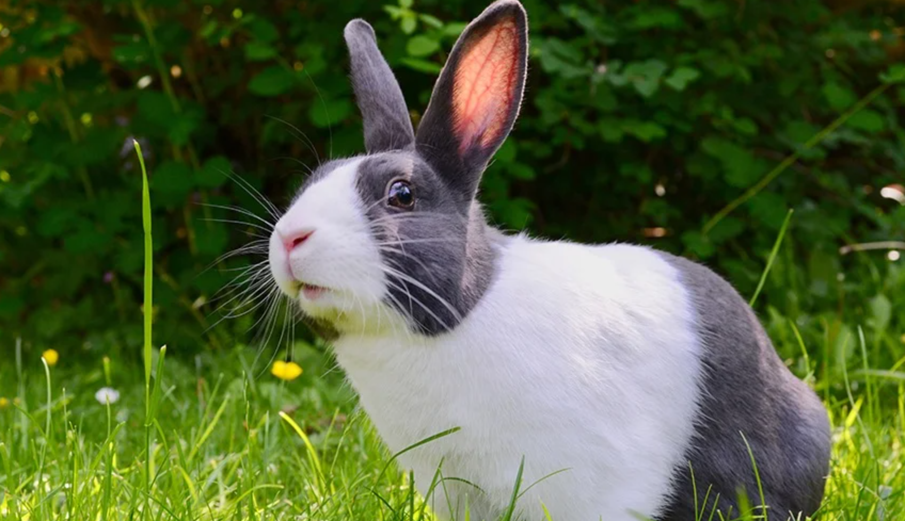
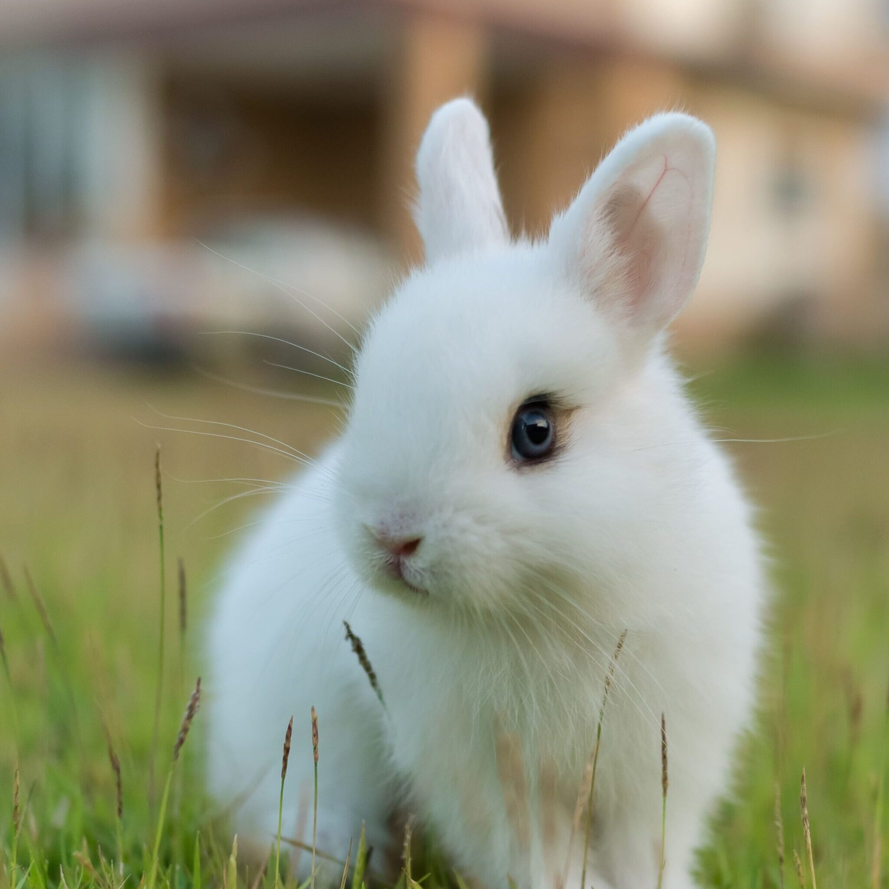
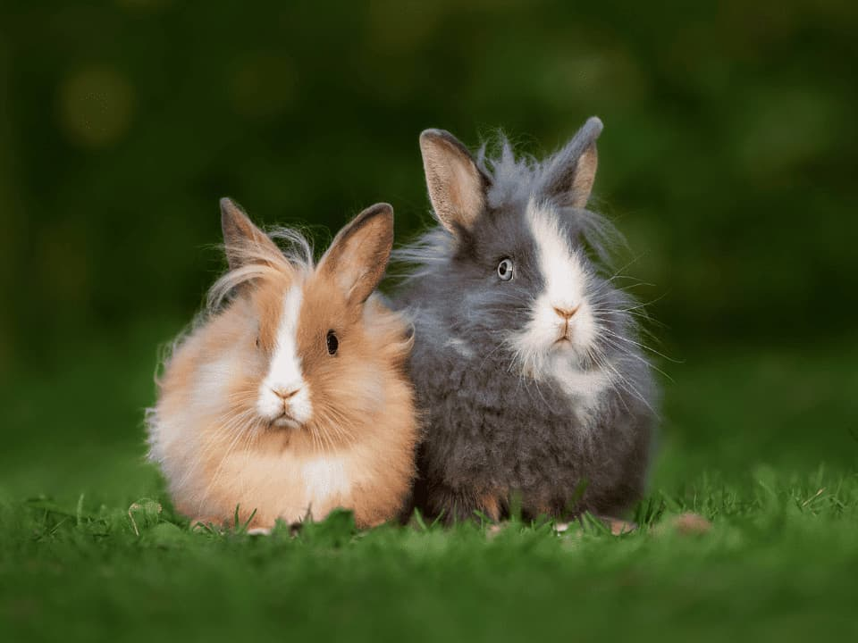
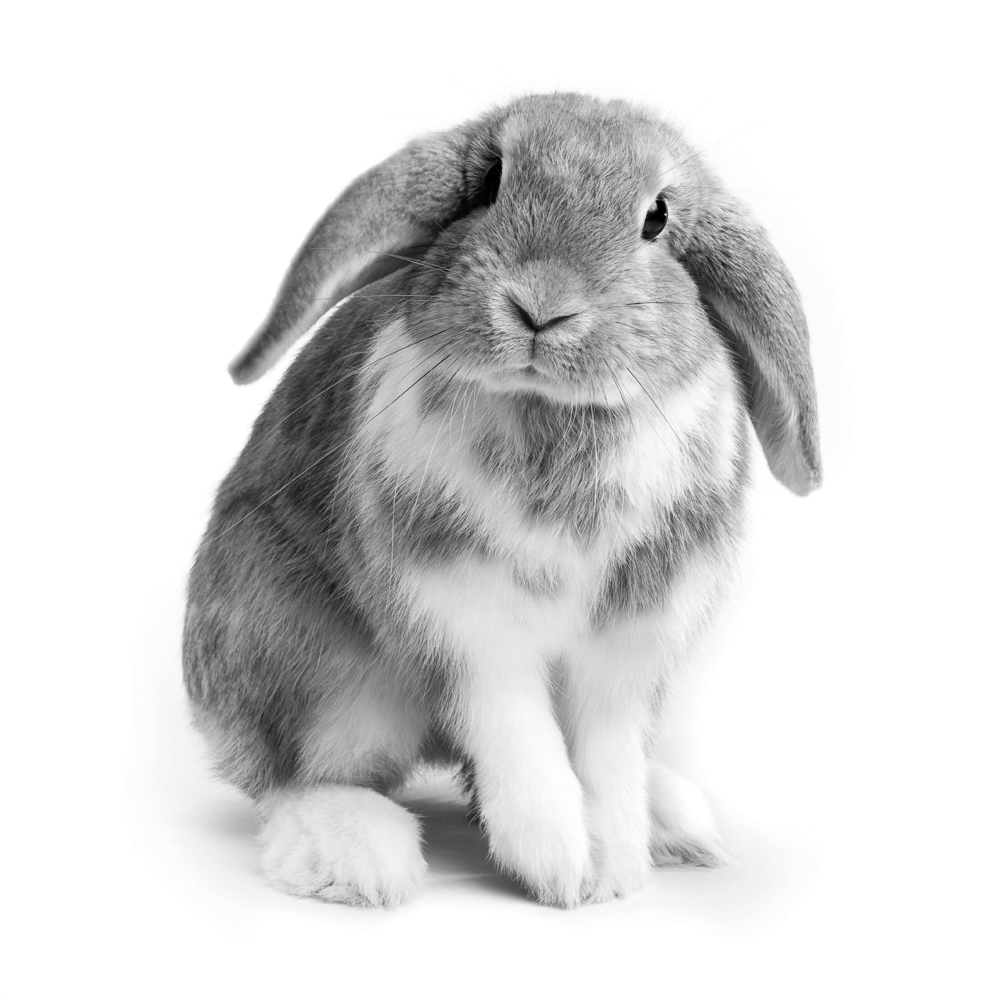

더치(Dutch)
|
 |
더치 토끼의 가장 큰 특징은 판다를 연상시킨다는 것이다. 판다처럼 몸통의 흰 앞부분과 뒷부분털색이 확인히 구분된다. 얼굴은 알파벳 V자를 거꾸로 한 모양으로 털이 나 있다. 본래 더치의 털색은 읜색과 검은색으로 되어 있었지만, 지금은 갈색, 회색 등 다양하다. |
드워프(Dwarf)
|
 |
명칭 그대로 작은 소형 토끼를 말한다. 드워프는 가장 널리 보급된 인기 있는 토끼 종류로서 동그란 두상과 비교적 짧은 귀가 두드러진 특징이다. |
라이언헤드(Lion Head)
|
 |
얼굴과 목 사이에 마치 숫사자의 갈기 같은 턱을 갖고 있다. 라이언 헤드의 털색은 대부분이 흰색이며 귀 끝부분만 검정색이거나 몸 전체 털색이 다양하기도 한다. |
롭이어(Lop Ear)
|
 |
늘어진 귀란 뜻에서 온 이름이다. 기다란 두 귀가 아래로 내려와 있는 것이 특징이다. 토끼 전람회에 나가려면 50~60cm 정도가 되어야 한다. |